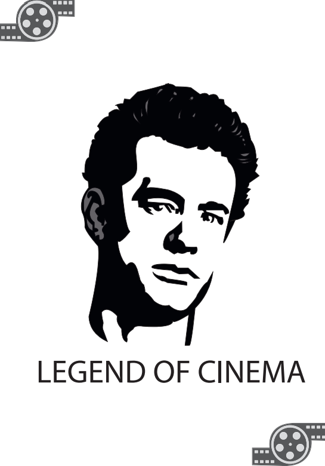

Grafisch ontwerp
Hier toon ik mijn creatieve ontwerpen en digitale illustraties.
Legend of Cinema
Een digitale portretillustratie die ik met Adobe heb gemaakt. Het ontwerp combineert een portret met grafische elementen uit de filmwereld.
